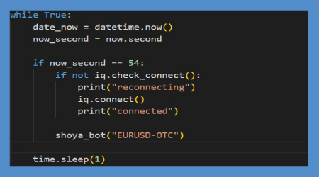
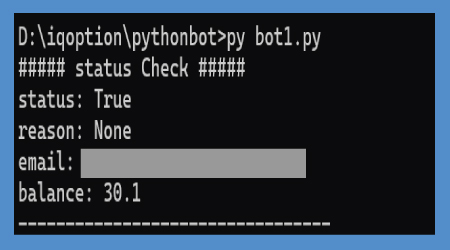
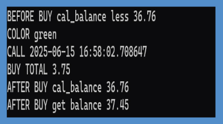

ผลงาน
โปรเจกต์ 1: บอทเทรดอัตโนมัติ IQ Option
โปรเจกต์นี้เป็นระบบเทรดอัตโนมัติที่เขียนด้วยภาษา Python เพื่อทำการตัดสินใจซื้อขายบน IQ Option โดยบอทจะวิเคราะห์ข้อมูลตลาดแบบเรียลไทม์ และซื้อขายตามกลยุทธ์ที่กำหนดไว้ล่วงหน้า
1. การเชื่อมต่อกับ IQ Option
ใช้ไลบรารี IQ_Option เชื่อมต่อกับบัญชีฝึกหัด
2. รับข้อมูลแท่งเทียนแบบเรียลไทม์
สตรีมแท่งเทียน 1 นาที และวิเคราะห์สามแท่งล่าสุด

3. การวิเคราะห์รูปแบบแท่งเทียน
วิเคราะห์แท่งเทียน 3 แท่ง เพื่อหาแนวโน้มและสัญญาณซื้อขาย (Call/Put)
- CALL: เขียว 2 แท่ง และแท่งที่ 3 เปิดสูง
- PUT: แดง 2 แท่ง และแท่งที่ 3 เปิดต่ำ

4. การทำงานของบอท
ทำงานวนลูป ตรวจโอกาสทุกนาที วินาทีที่ 54 พร้อมระบบ reconnect อัตโนมัติ
  
คำเตือน: การซื้อขายมีความเสี่ยง!
โปรเจกต์นี้เพื่อการศึกษาเท่านั้น โปรดศึกษาให้ดีก่อนลงทุนจริง
จุดแข็งโปรเจกต์
- ระบบอัตโนมัติ
- กลยุทธ์ชัดเจน
- ระบบ reconnect เสถียร
- ฟีเจอร์: เทรดอัตโนมัติ
- เทคโนโลยี: Python, IQ Option API
- ดูบน GitHub (ยังไม่ใส่ลิงก์)